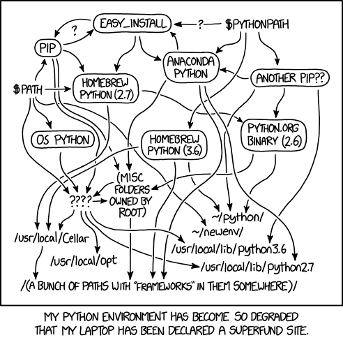
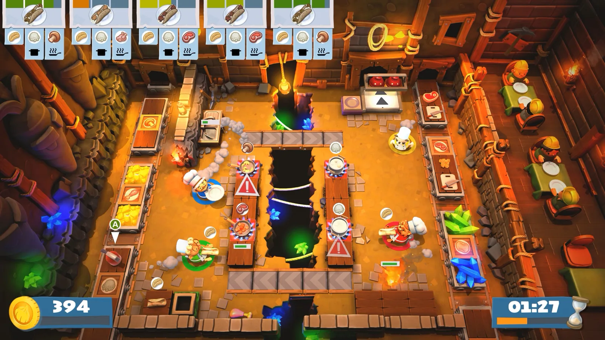
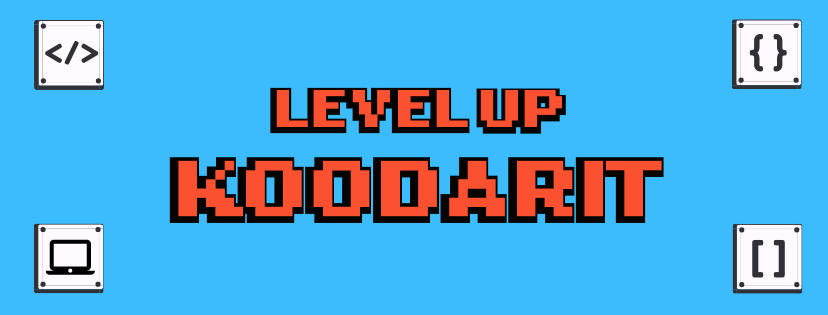

Before
I’ve been here

The old way
python.org, pyenv
Pick a version. Maybe compile it.
python -m venv
Activate it in each shell, or use its Python directly.
nvm
Because the frontend needs it
pip install
Into which Python, again?
.env
Copied from a teammate’s message
README.md
Out of date by Friday
A couple of months ago: my new laptop
What I did install
$ brew install mise
# in ~/.zshrc
eval "$(mise activate zsh)"
$ mise trust && mise install
What I never installed
mise fetched the version each project asked for
3.14 here, 3.13 there. mise fetched both.
mise.toml pins tools. uv.lock locks Python dependencies.
Too many cooks
But there is hope
mise is named after mise-en-place: everything in its place before you start cooking

A confession
mise.toml is TOML. No indentation rules to keep track of.
# mise.yaml (imaginary)
tools:
python: "3.14"
uv: latest
node: lts # inside python now?
terraform: latest
New tools, built for speed
uv
mise
uv installs your Python libraries. mise installs Python, Node and Terraform, and runs your commands.
One file
# mise.toml, in the repo root
# mise.toml pins tool versions
# uv.lock locks Python dependencies
[tools]# exact tool versions
python = "3.14.10"
uv = "0.11.7"
"pypi:ruff" = "0.17.5"
node = "26.13.1"# the frontend
terraform = "1.17.2"# the cloud
Packages
uv add requests
requests, pandas, fastapi. uv puts them in the project’s venv.
"pypi:ruff"
ruff, pre-commit. Each tool gets an isolated environment; projects select the version.
This demo downloads precompiled Python. Some libraries may still need build tools.
[settings]# who makes the venv
python.uv_venv_auto = "create|source"
Do I need uv?
_.python.venv
mise creates the venv with python -m venv. Install deps with pip.
_.python.venv + uv
Same config. mise uses uv to create the venv because it is faster.
uv_venv_auto
uv manages deps and uv.lock. mise activates the venv on cd.
This demo uses the third. A postinstall hook syncs dependencies.
mise and uv
| Job | mise | uv |
|---|---|---|
| Python interpreter | Installs pinned versions | Can, if you let it |
| Virtualenv on cd | Activates; can create via uv | Creates |
| Dependencies, uv.lock | No | Owns |
| Env variables | Project environment | Can load .env files |
| CLI tools | "pypi:ruff" | uvx ruff |
[env]# environment variables
APP_GREETING = "Hello from mise!"
What happens on cd
Outside the repo
$ which python
# your existing Python,
# a mise shim, or not found
$ echo $APP_GREETING
(empty)
Inside the repo
$ which python
…/mise-uv-demo/.venv/bin/python
$ echo $APP_GREETING
Hello from mise!
[tasks.test]# your commands
run = "uv run pytest"
[tasks.lint]
run = "ruff check ."
Tasks
Before: Makefile
test:
uv run pytest
$ make test
Now: mise.toml
[tasks.test]
run = "uv run pytest"
$ mise run test
The bonus: mise installs Python and uv before the task runs. Share task names across laptops and CI.
In practice
One-time setup
# once per laptop
brew install mise
# in ~/.zshrc
eval "$(mise activate zsh)"
# once per repo
mise trust && mise install
Without it, no venv on cd
mise won’t run a repo’s config until you approve it
Cloud accounts, VPN, GitHub
This repo’s postinstall hook runs uv sync --locked and installs the child folder’s Python.
Laptop, CI and production
# GitHub Actions: workflow excerpt
steps:
- uses: actions/checkout@v6
- uses: jdx/mise-action@v5
- run: mise run test
- run: mise run lint
Pin tool versions. mise-action installs the configured tools.
Pin the CLI; lock provider dependencies separately.
Choose compatible Python. Install app dependencies with uv sync --locked --no-dev.
Example excerpt. The demo repo pins actions by commit SHA.
On Windows
# in PowerShell, no admin rights needed
irm https://mise.run/powershell | iex
# or
winget install jdx.mise
Share the config across platforms. Task commands may need platform-specific changes.
Add one line to your profile and the venv switches on with cd
Live demo
Recorded terminal demo · 1:30 · Download video
Gotchas
mise doctor
With shims alone the venv is not on PATH. Use mise activate.
UV_PYTHON
uv may pick a Python it downloaded. Point UV_PYTHON at mise’s.
mise sync python
Reuse pyenv or uv installs, then delete what you don’t need
UV_PYTHON = { value = "{{ tools.python.path }}", tools = true }
Backup · for questions
Alternatives
| Approach | Good when | Trade-off |
|---|---|---|
| uv alone 2024 | The project is pure Python | Python only |
| Dev Containers 2019 | You want everything in a container | Needs a container runtime |
| Nix 2003, devbox 2022 | You want declarative, reproducible environments | Steep learning curve |
| Jupyter 2014 | Exploring data step by step | Not a setup: run it inside one, uv run --with jupyter jupyter lab |
| Anaconda 2012, pixi 2023 | Data science with native libraries | Separate ecosystem; mise can install Anaconda too |
| Older ways, still around | ||
| pyenv 2012 | Switching Python versions | Compiles Python; mise and uv do this now |
| asdf 2014 | Versions for many languages | mise started as a faster asdf |
Honest advice
skip mise
The repo is pure Python, has no env vars to manage, and the team is happy
add mise
The project also needs Node or other tools, settings, shared commands, or quick onboarding
Start with uv. Add mise when the README grows.

OS Level Up: the rogue and independent sibling of Mimmit Koodaa
OS as in OmpeluSeura, the sewing circle. Or the operating system
Peer support for learning to code, in Finnish and English. Materials, meetups and visits to IT companies.